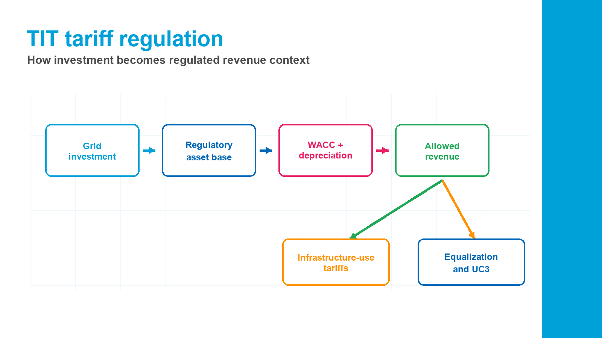

TIT 2024-2027, updated 1 July 2025
Distribution tariff regulationRegolazione tariffaria della distribuzione
This page translates the updated Integrated Text for electricity distribution tariffs. It explains how ARERA recognizes distributor costs, how ROSS changes the allowed-revenue framework, how reference tariffs and infrastructure-use tariffs work, and how equalization manages tariff decoupling. Testo Integrato delle disposizioni tariffarie per l'erogazione del servizio di distribuzione dell'energia elettrica: riconoscimento dei costi, criteri ROSS, tariffe di riferimento, tariffe per l'uso delle infrastrutture e perequazione.

Why it matters
How TIT supports the A2A CBACome TIT supporta l'ACB A2A
TIT is the regulatory bridge between physical grid investment and tariff recognition. It helps explain which costs enter the regulated asset base, how capital is remunerated, how depreciation is recognized, and why allowed revenues differ from customer-facing tariffs. TIT collega investimento fisico e riconoscimento tariffario. Aiuta a spiegare quali costi entrano nel capitale regolatorio, come il capitale è remunerato, come sono riconosciuti gli ammortamenti e perché i ricavi ammessi differiscono dalle tariffe applicate ai clienti.
- Use for cost recognitionRiconoscimento costiIdentify how OPEX, capital investment, depreciation, contributions, and dismissions are treated for regulated distributors.Identifica il trattamento di OPEX, capitale investito, ammortamenti, contributi e dismissioni per i distributori regolati.
- Use for regulatory logicLogica regolatoriaExplain the ROSS framework, fast money, slow money, X-factor, Y-factor, Z-factor, and capital revaluation logic.Spiega ROSS, fast money, slow money, X-factor, Y-factor, Z-factor e rivalutazione del capitale.
- Use for tariff contextContesto tariffarioUnderstand reference tariffs, infrastructure-use tariffs, domestic TD components, and non-domestic fixed/power/energy components.Chiarisce tariffe di riferimento, tariffe per uso infrastrutture, componenti TD domestiche e quote fissa/potenza/energia non domestiche.
- Use for boundariesPerimetroAvoid confusing social cost-benefit benefits with tariff recovery or equalization flows.Evita di confondere benefici socio-economici ACB con recupero tariffario o flussi di perequazione.
English working translationTesto fonte
Full regulatory context by titleContesto regolatorio completo per titolo
The translation below follows the source document's order and focuses on meaning for the A2A electricity distribution CBA. Struttura e contenuti del TIT organizzati nello stesso ordine del documento sorgente.
Title ITitolo ITitle IITitolo IITitle IIITitolo IIITitle IVTitolo IVTitle VTitolo VTitle VITitolo VITitle VIITitolo VIITitle VIIITitolo VIIITitle IXTitolo IX
Title I - DefinitionsTitolo I - Definizioni
The TIT defines the tariff vocabulary for electricity distribution: tariff year, voltage levels, distribution service, distributor, network operator, withdrawal point, connection point, available power, committed power, reactive power factor, reference tariff, infrastructure-use tariff, and the UC3 component. It also links this text to the surrounding regulatory system: TIC for connection conditions, TIME for metering, TIWACC for cost of capital, TIROSS and ROSS for expenditure-and-service-objective regulation, and RTTE for transmission tariffs.
Il TIT definisce il vocabolario tariffario della distribuzione elettrica: anno tariffario, livelli di tensione, servizio di distribuzione, impresa distributrice, gestore di rete, punto di prelievo, punto di connessione, potenza disponibile, potenza impegnata, fattore di potenza, tariffa di riferimento, tariffa per l'uso delle infrastrutture e componente UC3.
Title II - General provisionsTitolo II - Disposizioni generali
The general provisions govern tariff regulation for the electricity distribution service from 1 January 2024 to 31 December 2027. They classify contract types, including domestic low voltage, public lighting, publicly accessible EV-charging infrastructure, other low-voltage users, medium-voltage public lighting, other medium-voltage users, high-voltage users, and extra-high-voltage users. The document requires infrastructure tariffs and reactive-energy charges to be applied consistently with ARERA service-quality rules and network codes.
Distributors with at least 25,000 withdrawal points are subject to ROSS criteria. Distributors below that threshold remain under the parametric regime. Annual tariff updates depend on data submitted by distributors; missing or late data can be excluded from the update and replaced by prudent estimates. Correction requests are accepted with different timing depending on whether they benefit final customers or the distributor, and correction requests may trigger an administrative indemnity.
Le disposizioni generali regolano il servizio di distribuzione elettrica dal 1 gennaio 2024 al 31 dicembre 2027. Sono individuate le tipologie contrattuali: domestici BT, illuminazione pubblica, infrastrutture di ricarica accessibili al pubblico, altri utenti BT, utenti MT, utenti AT e AAT.
Le imprese distributrici con almeno 25.000 punti di prelievo sono soggette ai criteri ROSS; le imprese sotto soglia restano nel regime parametrico. Gli aggiornamenti tariffari dipendono dai dati comunicati dalle imprese distributrici e dalle relative rettifiche.
Title III - Cost recognition for distributors not subject to ROSSTitolo III - Criteri di riconoscimento dei costi per imprese non soggette ai criteri ROSS
For distributors not subject to ROSS, the recognized cost for electricity distribution tariff purposes is determined under Resolution 237/2018/R/eel and later amendments. In practice, this keeps smaller distributors under a parametric cost-recognition approach rather than the ROSS expenditure-and-service-objective framework.
Per le imprese non soggette a ROSS, il costo riconosciuto ai fini tariffari è determinato secondo la deliberazione 237/2018/R/eel e successive modifiche.
Title IV - Cost recognition for ROSS distributorsTitolo IV - Criteri di riconoscimento dei costi per imprese soggette ai criteri ROSS
ROSS applies to electricity distribution and metering, except for capital-cost recognition of 2G smart metering systems. For ROSS distributors, recognized cost is determined jointly for distribution and metering and includes fast money, incompressible on-top costs, efficiency recoveries achieved at the cut-off date, remuneration of invested capital, depreciation, and items outside ROSS.
Eligible operating costs are based on separated annual accounts and exclude non-tariff revenues, costs of other activities, internal sales between activities, capitalized costs, and cost items generally not allowed under TIUC and TIROSS. The 2024 OPEX baseline starts from 2022 eligible OPEX and the number of withdrawal points served, then is revalued ex ante using inflation assumptions. In later years it is updated using RPI, the productivity X-factor, the Y-factor for exceptional events or regulatory changes, and potentially a Z-factor upon justified request.
Regulatory invested capital includes gross assets, accumulated depreciation, public and private contributions, work in progress, employee severance fund, and net working capital. After the cut-off, asset entries, contributions, depreciation, disposals, network acquisitions or transfers, work in progress, severance fund, and net working capital are updated under TIROSS. Remuneration is calculated by applying TIWACC WACC values to net regulatory invested capital. Certain 2012-2014 investments receive a 1% WACC uplift. Disposals do not lead to recognition of residual unamortized value.
I criteri ROSS si applicano ai servizi di distribuzione e misura, salvo il riconoscimento dei costi di capitale dei sistemi di smart metering 2G. Per le imprese soggette a ROSS il costo riconosciuto è determinato congiuntamente per distribuzione e misura.
I costi operativi riconosciuti derivano dai conti annuali separati ed escludono ricavi non tariffari, costi di altre attività, vendite interne, costi capitalizzati e partite non ammissibili secondo TIUC e TIROSS. La baseline OPEX 2024 parte dagli OPEX eleggibili 2022 ed è aggiornata negli anni successivi con RPI, X-factor, Y-factor ed eventuale Z-factor.
Il capitale investito regolatorio comprende cespiti lordi, fondi ammortamento, contributi pubblici e privati, immobilizzazioni in corso, fondo TFR e capitale circolante netto. La remunerazione del capitale investito applica i valori WACC del TIWACC.
Title V - Reference tariffsTitolo V - Tariffe di riferimento
Reference tariffs are the distributor-specific tariffs that determine allowed revenues. For non-ROSS distributors, ARERA publishes reference tariffs by 31 March of year t for that same year, under the parametric rules. For ROSS distributors, ARERA publishes provisional reference tariffs by 15 June of year t and definitive reference tariffs by 31 March of year t+2. ROSS reference tariffs are defined jointly for distribution and metering.
For ROSS distributors, provisional reference tariffs include ex-ante inflation and capital-revaluation effects; definitive reference tariffs use ex-post values. Provisional tariffs are expressed in euros, while definitive tariffs are expressed in euros per withdrawal point served and are not differentiated by contract type.
Le tariffe di riferimento sono specifiche dell'impresa distributrice e determinano i ricavi ammessi. Per le imprese non ROSS sono pubblicate entro il 31 marzo dell'anno t; per le imprese ROSS sono pubblicate tariffe provvisorie entro il 15 giugno dell'anno t e definitive entro il 31 marzo dell'anno t+2.
Per le imprese ROSS, le tariffe provvisorie includono effetti ex ante di inflazione e rivalutazione del capitale; le definitive usano valori ex post e sono espresse in euro per punto di prelievo servito.
Title VI - Tariffs for use of infrastructureTitolo VI - Tariffe per l'uso delle infrastrutture
Infrastructure-use tariffs cover the electricity distribution service and must be applied by distributors transparently, non-discriminatorily, and equally to current and potential counterparties in the same contract type. ARERA publishes these tariffs by 31 December for application in the following year, with the objective of balancing national revenues from infrastructure tariffs with national allowed revenues from reference tariffs.
Non-domestic tariffs have a three-part structure: fixed quota in euro cents per withdrawal point per year, power quota in euro cents per kW per year, and energy quota in euro cents per kWh. Domestic users are charged through tariff TD, with components sigma1, sigma2, and sigma3. Contracted power levels are modular up to 30 kW, and power limiters are set at the committed power plus at least 10%. No tariff charge may be requested after service termination.
Le tariffe per l'uso delle infrastrutture coprono il servizio di distribuzione e sono applicate in modo trasparente, non discriminatorio e paritario. ARERA le pubblica entro il 31 dicembre per l'anno successivo, con l'obiettivo di allineare i ricavi nazionali da tali tariffe ai ricavi ammessi dalle tariffe di riferimento.
Per gli utenti non domestici la struttura è articolata in quota fissa, quota potenza e quota energia. Per gli utenti domestici si applica la tariffa TD con componenti sigma1, sigma2 e sigma3. I livelli di potenza impegnata sono modulari fino a 30 kW.
Title VII - Reactive energy chargesTitolo VII - Corrispettivi per energia reattiva
For final-customer withdrawal points, the minimum instantaneous power factor at maximum load in F1 and F2 time bands is 0.9, and the minimum monthly average power factor is 0.7. Injection of reactive energy into the network from withdrawal points is not permitted. If these rules are not respected, the network operator may require plant adjustment and may suspend service if adjustment is not made.
Reactive-energy charges apply to non-domestic low-voltage customers above 16.5 kW available power, to low-voltage distribution interconnections, to non-domestic medium-voltage customers, and to medium-voltage distribution interconnections. Charges are applied monthly by time band. The network-cost portion enters revenue equalization, while the remaining revenue related to induced network losses stays with the distributor.
Per i punti di prelievo dei clienti finali, il fattore di potenza minimo istantaneo a massimo carico nelle fasce F1 e F2 è 0,9 e il fattore medio mensile minimo è 0,7. Non è consentita l'immissione di energia reattiva in rete dai punti di prelievo.
I corrispettivi per energia reattiva si applicano a clienti non domestici BT sopra 16,5 kW disponibili, interconnessioni BT, clienti non domestici MT e interconnessioni MT. La parte riferita ai costi di rete entra nella perequazione dei ricavi.
Title VIII - Mechanisms for tariff-decoupling differencesTitolo VIII - Meccanismi per la gestione degli scostamenti derivanti dal tariff decoupling
General equalization for distributors has two parts. First, revenue equalization for distribution and metering manages the difference between distributor-specific reference tariffs and customer-facing infrastructure-use tariffs. Second, transmission-cost equalization manages differences between tariffs paid by distributors to the transmission system and transmission tariffs applied by distributors to final withdrawal points.
CSEA quantifies, liquidates, and pays equalization balances. Missing or late data leads to prudent estimates designed to minimize amounts due from the system to the non-compliant distributor and maximize amounts due from that distributor to the system. If account funds are insufficient, payments are made pro rata. Correction requests after deadlines may trigger an administrative indemnity equal to 1% of the correction's economic value, with the minimum shown in the tariff tables.
La perequazione generale per le imprese distributrici comprende la perequazione dei ricavi di distribuzione e misura e la perequazione dei costi di trasmissione. La prima gestisce la differenza tra tariffe di riferimento e tariffe per l'uso delle infrastrutture; la seconda gli scostamenti legati alle tariffe di trasmissione.
CSEA quantifica, liquida ed eroga i saldi di perequazione. Dati mancanti o tardivi comportano stime prudenziali. Rettifiche oltre i termini possono generare un'indennità amministrativa pari all'1% del valore economico della rettifica.
Title IX - Promotions and incentivesTitolo IX - Promozioni e incentivi
The TIT preserves certain incentive effects from previous regulatory periods for investments that entered service between 2008 and 2015. It also promotes distribution-company aggregations during 2024-2027. Some aggregation cases involving parametric-regime distributors can use implicit capital values recognized through the parametric tariff and may receive one-off incentives equal to 30% of recognized OPEX from the last tariff before the corporate change.
Aggregations involving distributors of different sizes may receive one-off per-withdrawal-point incentives: 50 euros per withdrawal point for operations completed by 31 December 2025 and 40 euros for operations completed in 2026 or 2027. The TIT also includes incentives for transferring high- and extra-high-voltage network assets, including high-voltage lines and primary-substation bays/busbars, with premiums depending on timing and asset value.
Il TIT conserva alcuni effetti incentivanti dei precedenti periodi regolatori per investimenti entrati in esercizio tra 2008 e 2015 e promuove aggregazioni tra imprese distributrici nel periodo 2024-2027.
Le aggregazioni tra distributori di diversa dimensione possono ricevere incentivi una tantum per punto di prelievo: 50 euro per operazioni concluse entro il 31 dicembre 2025 e 40 euro per operazioni concluse nel 2026 o 2027. Sono previsti anche incentivi per trasferimenti di reti AT e AAT.
Regulatory calculation logic
Key formulas and model interpretationFormule chiave e interpretazione per il modello
These formulas explain tariff recognition and equalization. They are not the CBA NPV formulas, but they help justify regulatory assumptions in the financial model. Queste formule spiegano riconoscimento tariffario e perequazione. Non sono le formule NPV dell'ACB, ma aiutano a giustificare ipotesi regolatorie nel modello finanziario.
OPEX baseline updateAggiornamento baseline OPEX
Baseline Opexm,t
=
Baseline Opexm,t-1
·
(1 + RPIt - X + Y)
ROSS updates operating-cost baselines using inflation, productivity recovery, and exceptional-event/regulatory-change adjustments.ROSS aggiorna la baseline OPEX usando inflazione, recupero di produttività e aggiustamenti per eventi eccezionali o mutamenti regolatori.
Capital remunerationRemunerazione del capitale
Capital remunerationm,t
=
Net regulatory invested capitalm,t
·
WACCTIWACC,t
TIT explicitly links remuneration of invested capital to the WACC values in TIWACC.TIT collega esplicitamente la remunerazione del capitale investito ai valori WACC del TIWACC.
Distribution and metering revenue equalizationPerequazione ricavi distribuzione e misura
PDm,t
=
RAm,t
-
REm,t
The equalization balance is allowed revenue minus effective revenue. This is tariff-decoupling regulation, not an extra project benefit.Il saldo di perequazione è ricavo ammesso meno ricavo effettivo. È regolazione del tariff decoupling, non un beneficio aggiuntivo del progetto.
Residual electronic-meter recoveryRecupero residuo misuratori elettronici
RRESm,t
=
min(Ninstalled MEBT m,t; NBT meters m,2010)
·
Tt(res)
CBA caution
How not to misuse TIT in the assignmentCome non usare male TIT nell'assegnazione
The TIT explains regulatory recovery, not the social value of the investment. For CP Caracciolo, use TIT to justify financial/regulatory assumptions, while using ARERA CBA benefit guidelines for monetized benefits. TIT spiega il recupero regolatorio, non il valore sociale dell'investimento. Per CP Caracciolo usa TIT per ipotesi finanziarie/regolatorie e le linee guida ARERA ACB per i benefici monetizzati.
RelevantRilevante
Regulatory capital, depreciation, tariff recognition, ROSS cost treatment, and WACC linkage.
Capitale regolatorio, ammortamenti, riconoscimento tariffario, trattamento ROSS e collegamento al WACC.
Not a benefitNon è un beneficio
Tariff recovery and equalization cash flows should not be counted as social CBA benefits.
Recupero tariffario e perequazione non vanno conteggiati come benefici socio-economici ACB.
Best citation useUso migliore come fonte
Cite TIT when explaining why regulated distributors recover efficient costs and capital remuneration through tariffs.
Cita TIT per spiegare perché i distributori recuperano costi efficienti e remunerazione del capitale tramite tariffe.